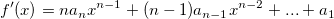

klein genug ist, können wir eine zentrierte Formel für die Differenziation verwenden, um die Ableitung zu approximieren:
klein genug ist, können wir eine zentrierte Formel für die Differenziation verwenden, um die Ableitung zu approximieren:Inhalt |
Diese Funktion führt einfache Ableitungsberechnungen für einen Datensatz durch. Die Ableitung an einem Punkt wird berechnet, indem der Durchschnitt der Steigungen zwischen dem Punkt und den zwei nächsten Nachbarn genommen wird. Fehlende Werte werden ignoriert.
Für äquidistant verteilte X-Daten können Sie die Glättungsmethode Savitzky-Golay anwenden. Wenn die X-Daten nicht äquidistant verteilt sind, ergibt diese Methode vielleicht kein zuverlässiges Ergebnis.
Um diese Funktion zu verwenden:
| Neu berechnen |
Bedienelemente zur Neuberechnung der Analyseergebnisse
Weitere Informationen finden Sie unter Analyseergebnisse neu berechnen. |
|---|---|
| Eingabe |
Legen Sie den XY-Eingabedatenbereich (Kurve) fest. Hilfe zum Festlegen von Bereichen finden Sie hier: Eingabedaten festlegen |
| Ableitung |
Legen Sie die Ableitungsordnung fest. |
| Glätten |
Legen Sie die Glättungsmethode fest.
|
| Ausgabe |
Legen Sie den Ausgabebereich fest. Hilfe zum Festlegen der Bereiche finden Sie unter: Ergebnisse ausgeben |
| Ableitungskurve zeichnen |
Legen Sie fest, ob die Ableitungskurve gezeichnet werden soll. |
Die Ableitung einer Funktion wird definiert als:
Während klein genug ist, können wir eine zentrierte Formel für die Differenziation verwenden, um die Ableitung zu approximieren:
\approx \frac{f(x_{i}+h)-f(x_{i}-h)}{2h}")
Origin bearbeitet diskrete Daten in der Praxis durch die Transformation der zentrierten Differenziationsformel und berechnet die Ableitung an Punkt  , indem der Durchschnitt der Steigungen zwischen dem Punkt und seinen zwei nächsten Nachbarn genommen wird.
, indem der Durchschnitt der Steigungen zwischen dem Punkt und seinen zwei nächsten Nachbarn genommen wird.
Die Ableitungsfunktion, die auf diskrete Datenpunkte angewendet wird, kann daher folgendermaßen geschrieben werden:
=\frac 12\left( \frac{y_{i+1}-y_i}{x_{i+1}-x_i}+\frac{y_i-y_{i-1}}{x_i-x_{i-1}}\right)")
Wenn die bei der Differenziation verwendete Glättung für  äquidistant verteilt ist, verwenden die Savitzky-Golay-Methode, um die Ableitungen zu berechnen.
äquidistant verteilt ist, verwenden die Savitzky-Golay-Methode, um die Ableitungen zu berechnen.
Zuerst ergibt sich durch Interpolation eine \!") :
:
=a_nx^n+a_{n-1}x^{n-1}+a_{n-2}x^{n-2}+\ldots +a_0")
Die Ableitung von ist dann:
